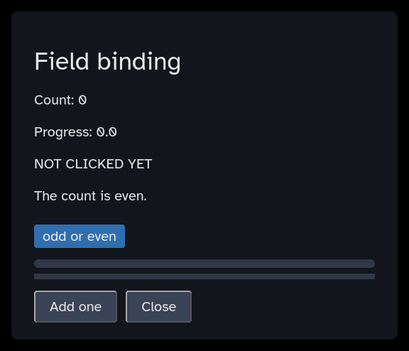
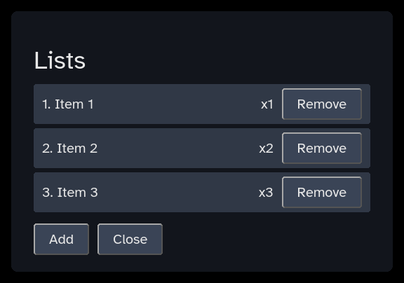
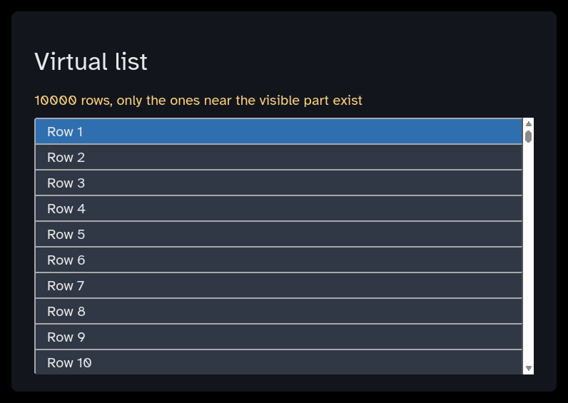

Data binding¶
A document shows view model fields and reacts to their changes. Use it to keep what the player sees in step with game data without writing update code. The page uses seven samples (see Samples): FieldBinding, Lists, StructList, NestedViewModel, Aliases, InnerRml and VirtualList.
Fields¶
A document reads only Field Notify fields: a Blueprint visible property marked FieldNotify, or
a const BlueprintCallable function that has only a return value. The document updates when the model broadcasts the
field. In a Blueprint view model, turn Field Notify on in the variable's Details
(Blueprint view models).
In C++, UE_MVVM_SET_PROPERTY_VALUE writes a field and broadcasts it; a plain assignment is not seen. A document never
writes a field; it calls a function that does (Events).
The FieldBinding sample has one field of each simple type:
UPROPERTY(BlueprintReadOnly, FieldNotify, Category = "Samples")
int32 Count = 0;
UPROPERTY(BlueprintReadOnly, FieldNotify, Category = "Samples")
float Progress = 0.0f;
UPROPERTY(BlueprintReadOnly, FieldNotify, Category = "Samples")
bool bEven = true;
UPROPERTY(BlueprintReadOnly, FieldNotify, Category = "Samples")
FText Message = INVTEXT("Not clicked yet");
UPROPERTY(BlueprintReadOnly, FieldNotify, Category = "Samples")
FLinearColor Accent = FLinearColor(0.2f, 0.6f, 1.0f);
UFUNCTION(BlueprintCallable, Category = "Samples")
void Increment();
void UArcRmlSamplesFieldBindingViewModel::Increment()
{
const FLinearColor Accents[] = {FLinearColor(0.2f, 0.6f, 1.0f), FLinearColor(1.0f, 0.55f, 0.1f), FLinearColor(0.3f, 0.85f, 0.4f)};
const int32 NewCount = Count + 1;
UE_MVVM_SET_PROPERTY_VALUE(Count, NewCount);
UE_MVVM_SET_PROPERTY_VALUE(Progress, (NewCount % 11) / 10.0f);
UE_MVVM_SET_PROPERTY_VALUE(bEven, NewCount % 2 == 0);
UE_MVVM_SET_PROPERTY_VALUE(Message, FText::Format(INVTEXT("Clicked {0} times"), NewCount));
UE_MVVM_SET_PROPERTY_VALUE(Accent, Accents[NewCount % UE_ARRAY_COUNT(Accents)]);
}
{{ Field }} prints a field. These attributes bind a field of the document's view model, or an expression, to an element. The FieldBinding sample uses data-if,
data-class-*, data-style-*, data-attr-* and data-event-click; lists are in the Lists sample below.
| Attribute | Effect |
|---|---|
data-if="expr" |
The element is shown only while the expression is true. |
data-visible="expr" |
Sets visibility; the element keeps its layout. |
data-class-<name>="expr" |
Adds the class <name> while the expression is true. |
data-style-<property>="expr" |
Sets one style property from the expression. |
data-attr-<name>="expr" |
Sets an attribute from the expression. |
data-attrif-<name>="expr" |
Sets the attribute <name> to empty while the expression is true and removes it while it is false. The tab bar marks its current tab this way. |
data-for, data-key |
Repeat an element per row, see Lists. |
data-event-<event>="..." |
Run an expression on an event, see Events. |
<p>Count: {{ Count }}</p>
<p>Progress: {{ Progress | format(1) }}</p>
<p>{{ Message | to_upper }}</p>
<p data-if="bEven">The count is even.</p>
<p data-if="!bEven">The count is odd.</p>
<div class="fb-badge" data-class-fb-odd="!bEven">odd or even</div>
<div class="fb-bar"><div class="fb-fill" data-style-width="(Progress * 100) + '%'" data-style-background-color="Accent"></div></div>
<progress class="fb-progress" max="1" data-attr-value="Progress"></progress>

Expressions can read fields (bEven, Progress), combine with operators, and call transforms with |. Text is
single-quoted. The whole language, every transform and what an error does: Expression reference.
Transforms¶
value | name(arguments) changes a value on its way into the document. In the sample, Progress | format(1) prints one
decimal and Message | to_upper upper-cases the text.
Every transform, with its arguments and what a wrong argument does, is in the Expression reference.
Types¶
| Field type | In the document |
|---|---|
bool |
Boolean. |
| Integer types | Integer. |
float, double |
Number. |
| Enum | Its name as text. |
FString, FName, FText |
Text. |
FGameplayTag |
Its name as text. |
FGameplayTagContainer |
An array of names. |
FLinearColor, FColor |
Colour; data-style-background-color="Accent" in the sample. |
FSoftObjectPath, soft pointers, UTexture* |
Text asset:<path>. |
FArcRmlImageRef |
Its Path as text. |
| A view model object | A nested model, see Nested view models. |
TArray |
An array. |
| Any other struct | A struct with all its members, read by member name (r.Name). A Blueprint struct member is read by the name typed in the editor. |
FArcRmlStructList |
An array of its rows, see Struct lists. |
TMap, TSet, other objects |
Empty; a warning is logged once per field. |
Nesting is read up to 16 levels deep.
Lists¶
A TArray is a list. data-for="r, i : Items" makes one element per row; r is the row and i its index.
data-key="r.Name" on the same element keeps a row's element across inserts and removals, matched by that value. The Lists
sample:
<div class="ls-row" data-for="r, i : Items" data-key="r.Name">
<span class="ls-name">{{ i + 1 }}. {{ r.Name }}</span>
<span>x{{ r.Quantity }}</span>
<button class="ls-remove ls-button" data-event-click="call('', 'Remove', i)">Remove</button>
</div>
USTRUCT(BlueprintType)
struct FArcRmlSamplesListsRow
{
GENERATED_BODY()
UPROPERTY(BlueprintReadOnly, Category = "Samples")
FString Name;
UPROPERTY(BlueprintReadOnly, Category = "Samples")
int32 Quantity = 0;
};
UCLASS()
class UArcRmlSamplesListsViewModel : public UMVVMViewModelBase
{
GENERATED_BODY()
public:
UArcRmlSamplesListsViewModel();
UPROPERTY(BlueprintReadOnly, FieldNotify, Category = "Samples")
TArray<FArcRmlSamplesListsRow> Items;
UFUNCTION(BlueprintCallable, Category = "Samples")
void Add();
UFUNCTION(BlueprintCallable, Category = "Samples")
void Remove(int32 Index);
private:
int32 NextNumber = 1;
};
A plain array sends its whole value when it changes, so announce the change with
UE_MVVM_BROADCAST_FIELD_VALUE_CHANGED(Items) after you edit it:
void UArcRmlSamplesListsViewModel::Add()
{
FArcRmlSamplesListsRow Row;
Row.Name = FString::Printf(TEXT("Item %d"), NextNumber);
Row.Quantity = NextNumber;
++NextNumber;
Items.Add(Row);
UE_MVVM_BROADCAST_FIELD_VALUE_CHANGED(Items);
}
void UArcRmlSamplesListsViewModel::Remove(int32 Index)
{
if (Items.IsValidIndex(Index))
{
Items.RemoveAt(Index);
UE_MVVM_BROADCAST_FIELD_VALUE_CHANGED(Items);
}
}
call('', 'Remove', i) passes the index as an argument; the function checks it before it uses it.

Struct lists¶
A plain array sends everything on every change. For a long list that changes often, hold the rows in an
FArcRmlStructList: it sends only the rows that were inserted, removed, moved or changed. Blueprint view models cannot use it. The StructList sample holds the same rows as Lists:
USTRUCT(BlueprintType)
struct FArcRmlSamplesStructListRow
{
GENERATED_BODY()
UPROPERTY(BlueprintReadOnly, Category = "Samples")
FString Id;
UPROPERTY(BlueprintReadOnly, Category = "Samples")
FString Name;
UPROPERTY(BlueprintReadOnly, Category = "Samples")
int32 Quantity = 0;
};
UArcRmlSamplesStructListViewModel::UArcRmlSamplesStructListViewModel()
{
Rows.SetRowType(FArcRmlSamplesStructListRow::StaticStruct());
for (int32 Index = 0; Index < 3; ++Index)
{
AddRow();
}
}
void UArcRmlSamplesStructListViewModel::AddRow()
{
FArcRmlSamplesStructListRow Row;
Row.Id = FString::Printf(TEXT("row-%d"), NextNumber);
Row.Name = FString::Printf(TEXT("Item %d"), NextNumber);
Row.Quantity = NextNumber;
++NextNumber;
Rows.Set(Row.Id, Row);
}
void UArcRmlSamplesStructListViewModel::Bump(int32 Index)
{
if (!Rows.GetKeys().IsValidIndex(Index))
{
return;
}
const FString Key = Rows.GetKeys()[Index];
const FArcRmlSamplesStructListRow* Current = Rows.FindAs<FArcRmlSamplesStructListRow>(Key);
if (Current)
{
FArcRmlSamplesStructListRow Row = *Current;
++Row.Quantity;
Rows.Set(Key, Row);
UE_MVVM_BROADCAST_FIELD_VALUE_CHANGED(Rows);
}
}
void UArcRmlSamplesStructListViewModel::Reverse()
{
TArray<FString> Order = Rows.GetKeys();
Algo::Reverse(Order);
Rows.SetOrder(Order);
UE_MVVM_BROADCAST_FIELD_VALUE_CHANGED(Rows);
}
SetRowTypenames the row struct, and the constructor calls it before any row is set.Set(Key, Row)adds the row or replaces the row with that key,Remove(Key)deletes it andSetOrder(Keys)sets the order;GetKeys()lists the keys in order andFindAs<Row>(Key)reads a row.- After a change the field is announced with
UE_MVVM_BROADCAST_FIELD_VALUE_CHANGED(Rows).
The document reads the rows like an array. The key given to Set and the Id member are the same text here, so
data-key="r.Id" matches:
<div class="sl-row" data-for="r, i : Rows" data-key="r.Id">
<span class="sl-name">{{ r.Name }}</span>
<span>x{{ r.Quantity }}</span>
<button class="sl-bump sl-button" data-event-click="call('', 'Bump', i)">+1</button>
<button class="sl-remove sl-button" data-event-click="call('', 'Remove', i)">Remove</button>
</div>
Nested view models¶
A field that holds a view model object, or an array of them, can be read through the parent's field name and called. Use
it when each part is an object the game updates on its own and the document calls: a party with a leader and members, each
its own view model. A struct array (above) holds plain data rows; a child announces its own changes and can be called.
The NestedViewModel sample is that party: the leader is Child, the members are Children.
UCLASS()
class UArcRmlSamplesNestedParentViewModel : public UMVVMViewModelBase
{
GENERATED_BODY()
public:
UArcRmlSamplesNestedParentViewModel();
UPROPERTY(BlueprintReadOnly, FieldNotify, Category = "Samples")
TObjectPtr<UArcRmlSamplesNestedChildViewModel> Child;
UPROPERTY(BlueprintReadOnly, FieldNotify, Category = "Samples")
TArray<TObjectPtr<UArcRmlSamplesNestedChildViewModel>> Children;
};
UArcRmlSamplesNestedParentViewModel::UArcRmlSamplesNestedParentViewModel()
{
Child = CreateDefaultSubobject<UArcRmlSamplesNestedChildViewModel>(TEXT("Child"));
Child->Name = TEXT("Leader");
const TCHAR* ChildNames[] = {TEXT("Archer"), TEXT("Healer"), TEXT("Scout")};
for (const TCHAR* ChildName : ChildNames)
{
UArcRmlSamplesNestedChildViewModel* Member = CreateDefaultSubobject<UArcRmlSamplesNestedChildViewModel>(ChildName);
Member->Name = ChildName;
Children.Add(Member);
}
}
The children are subobjects of the parent, made with CreateDefaultSubobject, so the create source makes the
parent and its children together.
<span class="nv-heading">Leader</span>
<div class="nv-row">
<span class="nv-name">{{ Child.Name }}</span>
<span id="nv-child-points">{{ Child.Points }} points</span>
</div>
<span class="nv-heading">Members</span>
<div class="nv-row" data-for="c : Children">
<span class="nv-name">{{ c.Name }}</span>
<span>{{ c.Points }} points</span>
</div>
{{ Child.Name }} reads a field of the leader, and c in data-for="c : Children" is one member. A leader or member
announces its own changes and the document updates the value read through the parent. A call names the model it targets, see
Events.
Aliases¶
data-alias-<name>="Path" makes <name> stand for the field path Path on that element and everything inside it. Use it
to shorten a long path you read many times. The Aliases sample shows the selected hero through sel:
<div class="al-card" data-alias-sel="Selected">
<p id="al-name" class="al-name">{{ sel.Name }}</p>
<p>{{ sel.Title }}, level {{ sel.Level }}</p>
</div>
<p id="al-long" class="al-result">Same name, written in full: {{ Selected.Name }}</p>
{{ sel.Name }}readsSelected.Name, so the two lines show the same text. When the "Next hero" button changesSelected, both lines update.- A model field with the same name as the alias wins over it, and the log warns that the alias is shadowed. Pick a name no field has.
- In a component, the alias path must come from a prop whose value is a whole
{{ path }}.
Inner RML¶
{{ }} shows a string as text. data-rml="Banner" shows it as markup: it replaces the element's children with the
string parsed as RML, again each time the string changes. The InnerRml sample shows one string from the game and one the
player types:
<p id="ir-banner" class="ir-line" data-rml="Banner"></p>
<!-- ... -->
<p id="ir-text" class="ir-line">{{ Typed }}</p>
<!-- ... -->
<p id="ir-rml" class="ir-line" data-rml="Typed"></p>
Banner is Welcome back, <span class="ir-gold">traveller</span>: the <span> becomes an element that the style sheet
colours. Typed starts as <b>x</b>: {{ Typed }} shows those characters as they are, data-rml turns them into a
<b> element holding x.
Never put player text in data-rml
Nothing is escaped in data-rml. A name, a chat line or a note a player typed can hold markup, and it becomes
elements: a player can insert an <img> or a styled <span>. Show player text with {{ }} and use data-rml only
for strings your own game or data wrote.
A localised text (loc) in data-rml is a compile error.
Virtual lists¶
A list of thousands of rows needs only the rows near the visible part. data-virtual on a data-for element creates
the elements for a window of entries and leaves the rest as data. The VirtualList sample shows 10 000 numbers:
<div id="vl-list" class="vl-list">
<button class="vl-row" data-for="n : Rows" data-virtual>Row {{ n }}</button>
</div>
.vl-list {
height: 360px;
overflow-y: auto;
background-color: #1b212b;
border-radius: 4px;
}
.vl-row {
display: block;
width: 100%;
height: 36px;
padding: 0 16px;
text-align: left;
background-color: #303846;
border-bottom: 1px #1b212b;
}
Rows is a TArray<int32> that the view model fills with 1 to 10 000; {{ Rows.size }} is the entry count.

- The parent of the
data-forelement is the scroll container. It needs a fixed height andoverflow-y: autoorscroll. A parent that does not scroll vertically creates no rows, and the log shows the errorVirtual data-for on <address>: its parent must scroll vertically. - Every row takes the size of the first row (its margin box). Rows of different heights, horizontal lists and other children in the scroll container are not supported.
- The elements that exist are the visible rows plus one box height before and after. The scroll bar keeps the length of the whole list.
- A row that leaves the window is removed, and with it its focus, hover and animations. When the rows are buttons, Up and Down move focus row by row and the box scrolls to keep the focused row in view.
data-keyworks as in Lists, but a key is read only for the rows in the window, so a repeated key outside it is not detected.- Two spacer elements before and after the rows give the scroll bar its length. They count as siblings, so
:first-child,:nth-child,+and~on a row count them too. Style rows by class. - On a
dc-import, putdata-virtualon the host wrapper withdata-for(Components).